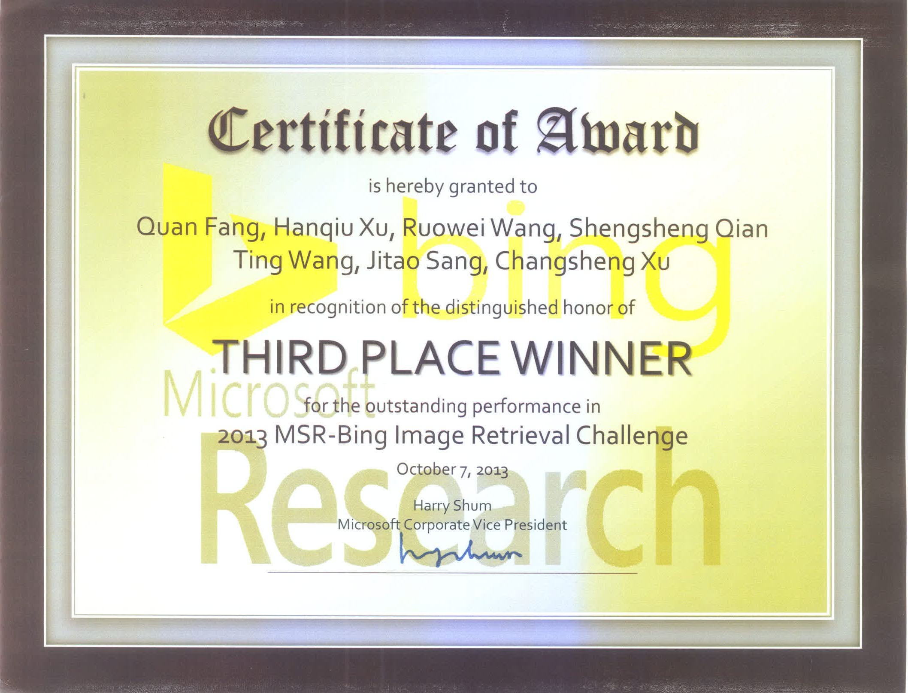

Short Bio
... Tina,a sunny girl ...
Interests
| Data Mining: | Data Mining, Machine Learning and Pattern Recognition. |
|---|---|
| Current Projects: | 面向地标和景点的互联网跨媒体精准搜索与挖掘系统的开发--- 基于地理位置的知识图谱构建与图谱搜索 |
Education
| Beijing University of Posts and Telecommunications(BUPT) | 2015 M.S at Information and Communication Engineering (expected) |
| Wuhan University of Technology | 2012 B.S. at Information and Communication Engineering |
Awards
- Third Place, Microsoft Research-Bing Challenge on Image Retrieval, 2013
- National Scholarship Award (selected from all university students in China), 2011
- .....
- .....
Publications
|  |
Towards MSR-Bing Challenge: Ensemble of Diverse Models for Image Retrieval

In the Microsoft Research-Bing Challenge on Image Retrieval (of ACM Multimedia Grand Challenge) 2013 Workshop. Quan Fang, Hanqiu Xu, Ruowei Wang, Shengsheng Qian, , Jitao Sang, Changsheng Xu |
|---|---|
| | |
Resources